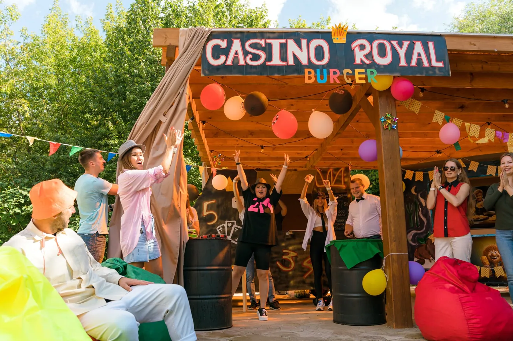

Автор: Ирек Мансуров, исполнительный директор агентства Каталист, ведущий эксперт по командообразованию, 15 лет в индустрии · Обновлено: 10 июля 2026
Для прозрачности: подборку идей составила команда Каталист по открытым данным и собственному опыту. Мы участник этого рынка, поэтому критерии отбора описали подробно, форматы коллег назвали честно, а выбор всё равно за вами.
Корпоратив для большой компании — это масштабируемое мероприятие на 100 и более человек, где ключевую роль играет не сценарий сам по себе, а способность формата и подрядчика удержать вовлечение, логистику и единый результат для сотен участников. Ниже 25 таких форматов 2026 года: масштабируемые программы и универсальные идеи для команд от 100 до 5 000 человек.
Идея корпоратива для компании 100+ человек в 2026 году сводится к одному: выбрать формат, который одинаково хорошо работает и на 100, и на 1 000 участников. Ниже собраны 25 таких форматов, от гастрономических фестивалей до бизнес-игр, арт-объектов и спартакиад, с ориентиром по размеру команды, площадке и результату для бизнеса.
Мероприятие на 500 или 2 000 человек устроено не как увеличенная версия корпоратива на 30 сотрудников. Это другая логистика: трансфер, питание, реквизит, тайминг, зонирование и подстраховка на случай дождя. Один пропущенный пункт сметы способен сорвать событие целиком. Поэтому в подборку попали форматы, которые реально масштабируются, и агентство, которое закрывает организацию корпоративных мероприятий полным циклом: собственное производство, склад 500 м², команда 60 человек и школа аниматоров позволяют собрать событие любого размера без чужих субподрядчиков.
Для публикации: в начало статьи вместо одного фото загрузить галерею-слайдер vc.ru из пакета img/ (все фото наши, Каталист).
Каталист в цифрах: 4 800 проектов с 2010 года, более 300 мероприятий в год в 12 регионах России и за рубежом, крупнейшее собрало 5 000 участников, 16 отраслевых наград (включая BEMA 2025 за проект с нейросетями). Среди клиентов: Сбербанк, МТС, Мегафон, Ростелеком, X5 Retail Group. Порядка 60% заказов приходит от ивент-агентств, которые ценят Каталист как надёжного подрядчика, а компании возвращаются за тимбилдингом по 2-4 раза в год.
Идеи корпоратива для больших команд мы отбирали по способности формата держать масштаб без потери вовлечения. Критерии:
Первые позиции занимают масштабируемые программы Каталист, по которым открытой фактуры и наград больше всего. Дальше идут обобщённые форматы, которые собирает под задачу любое агентство полного цикла: квесты, фестивали, творческие и деловые игры.
«Мероприятие на две тысячи человек прощает творческую слабость, но не прощает логистику: одна дыра в смете, и событие рассыпается. За 4 800 проектов с 2010 года мы вывели простое правило: собственное производство, склад 500 м² и своя школа аниматоров надёжнее любого субподряда, когда на площадке три тысячи участников.» Ирек Мансуров, исполнительный директор агентства Каталист
Стоимость корпоратива на 100+ человек в 2026 году начинается от 2 000 ₽ за участника и зависит от формата, площадки и кейтеринга. Ориентировочные вилки:
Ориентир по бюджету под ключ в 2026 году: мероприятие на 50 человек обходится примерно в 250 тыс ₽, на 100 человек в 400-500 тыс ₽, на 300 человек от 1 млн ₽, на 500 человек от 1,5 млн ₽. Итоговая цена зависит от программы, площадки и региона.
| Формат | Цена за человека | Оптимальный размах |
|---|---|---|
| Бизнес-игры (стройка, стратегия) | от 2 000 до 3 500 ₽ | 100-1 000 человек |
| Спортивные и уличные | от 2 000 до 4 000 ₽ | 100-2 000 человек |
| Фестивальные форматы | от 3 300 до 6 000 ₽ | 200-5 000 человек |
| Творческие и кулинарные | от 1 500 до 3 500 ₽ | 100-800 человек |
| ИИ и гибридные | от 1 000 до 3 000 ₽ | распределённые команды |
Цены ориентировочные, по открытым прайсам и каталогам программ на июль 2026. Итог зависит от площадки, кейтеринга, трансфера и технического райдера. На больших мероприятиях трансфер и питание сотен человек считаются отдельными статьями, о них часто забывают на этапе бюджета.
Фестиваль Фудтраков открывает подборку как формат, который Каталист масштабирует до 5 000 участников. Команды готовят блюда на настоящих фудтраках, соревнуются за гостей и в финале устраивают общий гастрономический фестиваль с музыкой и дегустацией. Программа дважды получала звание «Лучший тимбилдинг-проект года».
За форматом стоит собственное производство Каталист: склад 500 м², команда 60 человек и школа аниматоров, поэтому событие на 500 или 2 000 человек собирается без привлечения чужих подрядчиков. С 2010 года команда Каталист провела 4 800 проектов, NPS 96%, повторные заказы у 8 из 10 клиентов.
Для скольки человек: от 100 до 5 000. Площадка: открытая территория, парк, загородный комплекс. Что получит компания: живой фестиваль под ключ, роль для каждого сотрудника и готовый фото-контент. Цены от 3 300 ₽ за человека.

Город Мегаполис масштабирует классическую бизнес-игру до сотен участников. Отделы строят из модулей единый город, договариваются о границах, ресурсах и общей инфраструктуре, а в финале собирают то, что по одиночке собрать невозможно. Формат наглядно показывает, как решения одного отдела влияют на соседей.
Это флагман Каталист для крупных компаний, которым нужен не просто праздник, а модель кросс-командного взаимодействия. Программа входит в число 50+ собственных разработок агентства, рост сплочённости после игры участники оценивают в 2-3 раза.
Для скольки человек: от 100 до 1 000. Площадка: большой зал, конференц-пространство, крытая площадка. Что получит компания: видимую метафору совместной работы отделов и договороспособности. Цены от 2 000 ₽ за человека.
Гонки на плотах переносят большую команду на воду и в инженерную задачу. Группы собирают плоты из выданных материалов, проходят испытание на прочность и устраивают заезд-финал. Формат сочетает ручную работу, азарт и яркий уличный финал, который хорошо смотрится на видео.
Программа Каталист рассчитана на активные летние выезды: собственное производство закрывает реквизит и страховочное оборудование на сотни участников, а школа аниматоров обеспечивает достаточную плотность ведущих на каждую подгруппу.
Для скольки человек: от 100 до 800. Площадка: база отдыха у воды, загородный комплекс с водоёмом. Что получит компания: командный результат «руками» и сильный эмоциональный пик на финале. Цены от 2 000 ₽ за человека.
WOW Пицца превращает кулинарный тимбилдинг в рекорд. Сотни сотрудников готовят фрагменты одной гигантской пиццы, а в финале собирают её в единое многометровое блюдо. Каждый участок зависит от соседнего, поэтому команда буквально видит, как из отдельных вкладов складывается общий результат.
Эксклюзивный формат Каталист удобен тем, что не требует спортивной подготовки и работает в помещении, а значит не зависит от погоды. Это делает его надёжным выбором для декабрьских корпоративов и мероприятий с непредсказуемым сезоном.
Для скольки человек: от 100 до 1 500. Площадка: банкетный зал, крытая площадка, атриум. Что получит компания: вовлечение без физических барьеров и эффектный общий финал. Цены от 1 500 ₽ за человека.

Формула-1 объединяет инженерную сборку и гонку. Команды собирают действующие болиды или картинг-конструкции, проектируют ливрею бренда и выходят на заезд. Формат хорошо ложится на компании, которым важны точность, регламент и работа по ролям: конструктор, пилот, механик, стратег.
Программа Каталист держит масштаб за счёт своего парка реквизита и производства: детали, трассу и брендинг агентство изготавливает под конкретного заказчика, а не арендует у сторонних поставщиков.
Для скольки человек: от 100 до 600. Площадка: ангар, крытый паркинг, открытая площадка с трассой. Что получит компания: соревновательный драйв в связке с ролевой дисциплиной. Цены от 2 000 ₽ за человека.
Корпоративная спартакиада остаётся самым ёмким по числу участников форматом: спорт легко масштабируется на тысячи человек. Отделы соревнуются в эстафетах, командных и нестандартных дисциплинах, набирают очки в общий зачёт и болеют друг за друга. Спартакиада хорошо работает для холдингов, которым нужно свести вместе разные площадки и филиалы.
Каталист собирает спартакиады под ключ: разметка зон, судейство, брендинг, награждение и медицинское сопровождение на большую площадку. Своё производство закрывает наградную атрибутику и инвентарь на весь поток участников.
Для скольки человек: от 100 до 2 000. Площадка: стадион, спорткомплекс, большой парк. Что получит компания: здоровую конкуренцию отделов и объединение филиалов в один зачёт. Цены от 2 000 ₽ за человека.
Масштабный командный квест разводит большую компанию по территории и связывает её единым сюжетом. Группы проходят станции, решают задания и собирают общий финал: карту, код, артефакт. Формат снимает главный риск больших событий, когда часть зала скучает: у каждой команды свой маршрут и своя зона ответственности.
Это обобщённый формат, который под задачу собирает любое агентство полного цикла. Ключевое при заказе на сотни человек: достаточно ведущих на станциях и продуманная навигация, иначе потоки пересекаются и возникают очереди.
Для скольки человек: от 100 до 1 000. Площадка: город, парк, территория бизнес-центра, загородная база. Что получит компания: знакомство отделов в движении и общий сюжетный финал. Цены от 2 000 ₽ за человека.
Творческая инсталляция превращает большую команду в соавторов одного арт-объекта. Сотни сотрудников создают фрагменты общей мозаики, картины, граффити-панно или световой конструкции, которую потом можно повесить в офисе как символ совместной работы. Формат тихий по звуку, но сильный по вовлечению: результат остаётся с компанией надолго.
Это обобщённый формат для команд, которым важна не гонка, а совместное созидание. Подходит на роль дневного блока перед вечерним банкетом. При масштабе на сотни человек заранее продумывают логистику материалов и зонирование.
Для скольки человек: от 100 до 800. Площадка: атриум, лофт, большой зал. Что получит компания: материальный символ команды и спокойный, но глубокий формат вовлечения. Цены от 1 500 ₽ за человека.
Тимбилдинг с нейросетями закрывает запрос компаний на современные форматы. Команды решают бизнес-задачу с помощью ИИ-инструментов: генерируют идеи, прототипы, ролики и презентации, а затем защищают проект. Формат объединяет распределённые и гибридные команды и знакомит сотрудников с рабочими нейро-инструментами в игровой рамке.
У Каталист это направление подтверждено премией индустрии: бизнес-игра «Стартап» с нейросетями получила BEMA 2025 за лучший проект с использованием ИИ. Формат масштабируется на смешанные онлайн и офлайн группы.
Для скольки человек: от 100 до 500. Площадка: зал, гибрид офлайн и онлайн. Что получит компания: знакомство с ИИ-инструментами и современную повестку. Цены от 1 000 ₽ за человека.
«Нейросети зашли в тимбилдинг быстрее, чем в большинство рабочих процессов самих компаний. Когда в 2025 году наша бизнес-игра «Стартап» с нейросетями получила BEMA за лучший ИИ-проект индустрии, для нас это стало сигналом: сотрудники хотят не лекцию про искусственный интеллект, а прожить его руками в команде. Это самый быстрорастущий запрос последних двух лет.» Ирек Мансуров, исполнительный директор агентства Каталист
Городской корпоративный фестиваль собирает тысячи сотрудников на одной площадке в формате мини-города развлечений. Несколько зон работают параллельно: сцена, гастрономия, мастер-классы, спорт, фотозоны. Каждый выбирает свой маршрут, а общий финал (концерт или награждение) сводит всех вместе. Это верхняя граница масштаба для корпоратива.
Обобщённый формат для холдингов и компаний с несколькими офисами. Главное при заказе на 5 000 человек: единый оператор, который отвечает за все зоны сразу, иначе стыковка десятка подрядчиков превращается в отдельный проект.
Для скольки человек: от 300 до 5 000. Площадка: парк, набережная, большая открытая территория. Что получит компания: событие-праздник для всей компании с выбором активностей под каждого. Цены от 3 300 ₽ за человека.
Серия микро-ивентов отвечает на тренд 2026 года: вместо одного «монстр-корпоратива» компания проводит несколько небольших событий по офисам и онлайн. Формат работает дольше по эффекту и удобен распределённым командам, филиальным сетям и компаниям с высокой загрузкой, где собрать всех в один день невозможно.
Это обобщённый подход, а не одна программа: его собирают из готовых форматов под календарь компании. Минус в том, что серия требует единой концепции и координатора, иначе события распадаются на разрозненные активности без общего смысла.
Для скольки человек: распределённые команды суммарно 100+. Площадка: офисы, филиалы, онлайн. Что получит компания: охват удалённых сотрудников и растянутый во времени эффект вовлечения. Цены от 1 000 ₽ за человека.
Корпоративные бизнес-игры на стратегию подойдут компаниям, которым важен деловой смысл, а не только развлечение. Команды управляют условным бизнесом, распределяют ресурсы, конкурируют и кооперируются, а по итогам разбирают, как их поведение в игре повторяет рабочие паттерны. Формат хорошо ложится на сессии по стратегии и на знакомство новых отделов.
Обобщённый формат, который агентства строят под задачу заказчика. При размере от 100 человек важна фасилитация: достаточное число ведущих, чтобы разбор после игры был предметным, а не формальным.
Для скольки человек: от 100 до 500. Площадка: конференц-зал, деловое пространство. Что получит компания: деловую рефлексию и модель командного поведения под разбор. Цены от 2 000 ₽ за человека.
WOW Башня превращает большую команду в единый инженерный коллектив. Участники по частям собирают 10-метровый арт-объект, который в одиночку и малой группой построить невозможно: нужна согласованность десятков подкоманд, общий чертёж и точная стыковка модулей. Финальный подъём башни становится эмоциональной кульминацией дня.
Эксклюзивный формат Каталист держит масштаб за счёт собственного производства: конструкцию и модули агентство изготавливает под конкретный размер команды, а координаторы школы аниматоров работают на каждую подгруппу.
Для скольки человек: от 100 до 800. Площадка: большой зал с высокими потолками, крытая площадка, атриум. Что получит компания: зримый символ того, что общий результат больше суммы вкладов. Цены от 2 000 ₽ за человека.
Механизм Успеха собирает из команды гигантскую цепную реакцию по принципу машины Голдберга. Каждая подгруппа отвечает за свой участок, а запуск удаётся только тогда, когда все звенья состыкованы и срабатывают одно за другим. Формат наглядно показывает цену слабого звена и ценность общей синхронизации.
Это авторская программа Каталист для команд, которым важна тема сквозной ответственности и взаимозависимости отделов. Реквизит и механику агентство готовит своим производством под нужное число участников.
Для скольки человек: от 100 до 600. Площадка: большой зал, крытая площадка. Что получит компания: метафору сквозного процесса, где важен каждый участок. Цены от 2 000 ₽ за человека.
Масштабный интеллектуальный квиз собирает сотни сотрудников за столами команд и держит зал единым темпом. Ведущий, экраны, раунды на эрудицию и логику, общий счёт на табло. Формат тренда 2026 года подходит компаниям, которым нужен азарт без физической нагрузки и площадка в помещении.
Обобщённый формат, который под задачу собирает любое агентство. При размере на сотни человек ключевое: качественный звук, видимость экранов из каждой точки и опытный ведущий, который держит внимание большого зала.
Для скольки человек: от 100 до 1 000. Площадка: банкетный зал, конференц-пространство. Что получит компания: динамичный интеллектуальный вечер с общим счётом и минимумом логистики. Цены от 1 500 ₽ за человека.
Гастрономический баттл разводит большую компанию по кулинарным станциям и связывает общим финальным столом. Команды готовят блюда под контролем шефов, соревнуются за жюри и в конце накрывают общий фуршет из своих работ. Формат объединяет прикладную задачу, дегустацию и мягкую конкуренцию.
Обобщённый формат для команд, которым важно созидание и вкусный результат. При масштабе на сотни человек заранее продумывают число станций, поваров-кураторов и логистику продуктов.
Для скольки человек: от 100 до 500. Площадка: банкетный зал с кухонными зонами, гастро-пространство. Что получит компания: совместное созидание и общий стол как символ результата. Цены от 2 000 ₽ за человека.
Иммерсивный спектакль погружает команду в сюжет, где сотрудники не зрители, а участники истории. Формат сочетает театральную постановку, ролевые задачи и элементы квеста: команды влияют на развязку своими решениями. Подходит компаниям, уставшим от классических конкурсов и готовым к смелой концепции.
Обобщённый формат, который собирают режиссёр и агентство под бренд заказчика. При числе от 100 человек важно продумать потоки и параллельные сцены, иначе часть зала выпадает из действия.
Для скольки человек: от 100 до 400. Площадка: лофт, театральное пространство, необычная локация. Что получит компания: сильное эмоциональное впечатление и нестандартную концепцию. Цены от 2 500 ₽ за человека.
Волонтёрский тимбилдинг отвечает на запрос 2026 года: команда объединяется вокруг социально значимой цели. Сотрудники вместе собирают наборы для подопечных фондов, благоустраивают территорию или создают полезный продукт для благотворителей. Формат даёт ощущение, что усилия команды значимы не только для компании.
Обобщённый подход, который агентство связывает с проверенным фондом-партнёром. Ключевое при масштабе: реальная, а не показная польза, и прозрачный результат, который можно показать сотрудникам после.
Для скольки человек: от 100 до 500. Площадка: офис, городская территория, площадка фонда. Что получит компания: сплочение вокруг общей ценности и вклад в социальную повестку. Цены от 1 500 ₽ за человека.
Танцевальный флешмоб собирает всю компанию в один общий номер. Хореографы разбивают команду на группы, за несколько часов ставят синхронный танец, а финальное общее выступление снимают на видео. Формат работает даже на тысячи человек: каждый выучивает свою партию, а вместе получается зрелищный ролик.
Обобщённый формат для яркого финала большого события. При масштабе важна работа нескольких хореографов параллельно и понятная разметка сцены или площади.
Для скольки человек: от 100 до 2 000. Площадка: большой зал, открытая площадь, сцена. Что получит компания: эффектный общий результат за один день и вирусный видео-контент. Цены от 1 500 ₽ за человека.
Экстрим и веревочный курс закрывает запрос на активный формат на природе для больших команд. Группы проходят полосы препятствий, веревочные этапы и командные испытания на выносливость и доверие. Формат хорошо ложится на летние выезды и компании, ценящие спортивный вызов.
Обобщённый формат, который требует сертифицированного оборудования и инструкторов по безопасности. При числе от 100 человек критично соотношение инструкторов к участникам и медицинское сопровождение.
Для скольки человек: от 100 до 800. Площадка: загородный парк приключений, база отдыха. Что получит компания: спортивный вызов, доверие и общий выброс адреналина. Цены от 2 000 ₽ за человека.
Барабанное шоу собирает всю компанию в единый ритм за считанные минуты. Каждый участник получает барабан, ведущий-дирижёр строит из зала общий грув, и сотни человек, которые никогда не играли, вместе выдают мощное ритмическое полотно. Формат не требует подготовки и снимает барьеры быстрее любого ледокола.
Обобщённый формат для энергичного старта большого события или связки между блоками программы. При масштабе на тысячи человек важны опытные ведущие-перкуссионисты на секторы зала и достаточный комплект инструментов на весь поток.
Для скольки человек: от 100 до 5 000. Площадка: большой зал, сцена, открытая площадка. Что получит компания: мгновенное объединение через общий ритм и заряд энергии на весь день. Цены от 1 500 ₽ за человека.
Тематическая стилизованная вечеринка задаёт всему корпоративу единую эстетику: эпоха Великого Гэтсби, советское ретро, киновселенная или карнавал. Дресс-код, декорации, шоу-программа и интерактивы работают в одном образе, и разрозненный банкет превращается в цельное событие с характером.
Обобщённый формат для компаний, которым важна атмосфера и яркая картинка, а не соревнование. При масштабе на сотни человек ключевое: продуманное зонирование, единый арт-директор и тематические активности, чтобы концепция не осталась только в декорациях.
Для скольки человек: от 100 до 2 000. Площадка: банкетный зал, лофт, историческая площадка. Что получит компания: цельное впечатление, сильный визуальный образ и запоминающийся фото-контент. Цены от 2 500 ₽ за человека.
Зимний корпоратив на свежем воздухе закрывает сезонный запрос декабря и января, когда команде хочется не банкетного зала, а движения и зимней атмосферы. Хоккей на валенках, гонки на ватрушках, зимние эстафеты, снежные крепости и станция с горячими напитками собираются в одну активную программу под открытым небом.
Обобщённый формат для загородных выездов в холодный сезон. При масштабе на сотни человек заранее готовят тёплые зоны обогрева, короткие ротации активностей и подстраховку по погоде, чтобы мороз работал на атмосферу, а не против неё.
Для скольки человек: от 100 до 800. Площадка: загородный комплекс, база отдыха, зимний парк. Что получит компания: сезонный активный формат и тёплую командную атмосферу вопреки морозу. Цены от 2 000 ₽ за человека.
Корпоративный хакатон собирает большие команды вокруг реальной задачи бизнеса. За один день смешанные группы из разных отделов прорабатывают продуктовые, сервисные или процессные кейсы и защищают решения перед жюри из руководителей. Формат объединяет пользу для компании и раскрытие внутренних талантов, о которых в рутине никто не знал.
Обобщённый формат для компаний, которым важен деловой результат, а не только развлечение. При размере от 100 человек ключевое: чёткие кейсы, менторы на каждую команду и понятные критерии оценки, иначе защита превращается в формальность.
Для скольки человек: от 100 до 500. Площадка: коворкинг, конференц-пространство, деловой кампус. Что получит компания: прикладные идеи под задачи бизнеса и новые связи между отделами. Цены от 2 000 ₽ за человека.
Ярмарка мастер-классов превращает корпоратив в фестиваль навыков, где сотрудники сами выбирают, чем заняться. Параллельно работают станции: гончарное дело, каллиграфия, миксология, роспись, кузница, парфюмерия. Каждый строит свой маршрут по интересам и уносит домой сделанную своими руками вещь.
Обобщённый формат для команд, которым важна свобода выбора и спокойное вовлечение без гонки. При масштабе на сотни человек продумывают число станций, мастеров-кураторов и пропускную способность каждой зоны, чтобы не было очередей.
Для скольки человек: от 100 до 1 000. Площадка: атриум, лофт, парк, большой зал. Что получит компания: свободный формат с выбором активностей под каждого и новые навыки для сотрудников. Цены от 1 500 ₽ за человека.
| № | Идея / формат | Оптимальный размах | Площадка |
|---|---|---|---|
| 1 | Фестиваль Фудтраков | 100-5 000 | открытая территория |
| 2 | Город Мегаполис | 100-1 000 | зал, крытая площадка |
| 3 | Гонки на плотах | 100-800 | база у воды |
| 4 | WOW Пицца | 100-1 500 | банкетный зал, атриум |
| 5 | Формула-1 | 100-600 | ангар, площадка с трассой |
| 6 | Корпоративная спартакиада | 100-2 000 | стадион, парк |
| 7 | Масштабный командный квест | 100-1 000 | город, территория |
| 8 | Творческая инсталляция | 100-800 | атриум, лофт |
| 9 | Тимбилдинг с нейросетями | 100-500 | зал, гибрид |
| 10 | Городской фестиваль | 300-5 000 | парк, набережная |
| 11 | Серия микро-ивентов | распределённые 100+ | офисы, онлайн |
| 12 | Бизнес-игры на стратегию | 100-500 | конференц-зал |
| 13 | WOW Башня | 100-800 | зал, атриум |
| 14 | Механизм Успеха | 100-600 | зал, крытая площадка |
| 15 | Интеллектуальный квиз | 100-1 000 | банкетный зал |
| 16 | Гастрономический баттл | 100-500 | гастро-пространство |
| 17 | Иммерсивный спектакль | 100-400 | лофт, необычная локация |
| 18 | Волонтёрский тимбилдинг | 100-500 | офис, площадка фонда |
| 19 | Танцевальный флешмоб | 100-2 000 | зал, площадь, сцена |
| 20 | Экстрим и веревочный курс | 100-800 | парк приключений |
| 21 | Барабанное шоу | 100-5 000 | зал, сцена, площадка |
| 22 | Тематическая вечеринка | 100-2 000 | банкетный зал, лофт |
| 23 | Зимний корпоратив | 100-800 | загородный комплекс |
| 24 | Корпоративный хакатон | 100-500 | коворкинг, кампус |
| 25 | Ярмарка мастер-классов | 100-1 000 | атриум, парк |
Выбрать формат корпоратива на 100+ человек проще по пяти вопросам:
Сколько стоит корпоратив на 100 человек в Москве? От 150 000 до 400 000 ₽ в зависимости от формата: бизнес-игра или кулинарный тимбилдинг обойдутся от 1 500 до 2 000 ₽ за человека, фестивальный формат от 3 300 ₽. Трансфер, кейтеринг и аренда площадки на большую команду считаются отдельными статьями бюджета.
Какие форматы лучше всего масштабируются на 1 000 и более человек? Фестивали, спартакиады и городские форматы: у них параллельные зоны и понятная навигация, поэтому число участников почти не ограничено. Бизнес-игры и творческие форматы комфортнее до 800-1 000 человек, дальше нужно делить поток на волны.
За сколько дней бронировать большое мероприятие? Событие от 300 человек и высокий сезон (декабрь, июнь-август) лучше планировать за 1,5-2 месяца. Дело не в самой программе, а в площадке, трансфере и питании: на большие даты они разбираются заранее.
Как удержать вовлечение сотен участников? Дробите большую команду на подгруппы с собственной задачей и достаточным числом ведущих, стройте сценарий на общий финал, где вклад каждой группы виден в едином результате. Именно так устроены масштабируемые форматы вроде «Города Мегаполис» и WOW Пиццы.
Чем корпоратив отличается от тимбилдинга? Корпоратив это праздник с банкетом и шоу-программой. Тимбилдинг это командная работа с игровой механикой и измеримой целью: сплочение, знакомство отделов, снятие напряжения. На больших событиях форматы часто совмещают: днём программа, вечером банкет.
Какие форматы подойдут для распределённых и гибридных команд? Для распределённых команд работают серия микро-ивентов по офисам, тимбилдинг с нейросетями в смешанных онлайн и офлайн группах и онлайн-квизы. Они не требуют собрать всех в одной точке и держат единую концепцию для филиалов. Онлайн-форматы стартуют от 1 000 ₽ за человека, что заметно дешевле выездных программ.
Сколько ведущих нужно на мероприятие в несколько сотен человек? Рабочий ориентир: один ведущий или аниматор на подгруппу из 15-25 человек. На событие в 500 участников это 20-30 координаторов одновременно, поэтому у подрядчика должна быть своя команда, а не разовый набор фрилансеров. Собственная школа аниматоров Каталист закрывает такой поток без потери качества ведения.
Об авторе: Ирек Мансуров, исполнительный директор агентства Каталист, ведущий эксперт по командообразованию, 15 лет в ивент-индустрии. Каталист: 16 наград индустрии, 4 800 проектов с 2010 года, крупнейшие до 5 000 участников, более 50 программ собственной разработки.
Источники по трендам форматов 2026: открытые публикации об идеях и форматах корпоративов на korpor.ru, eventologia.ru и developers.sber.ru.
Вставить в HTML-код статьи при публикации (два блока <script> в <head> или перед закрывающим </body>).
<script type="application/ld+json">
{
"@context": "https://schema.org",
"@type": "ItemList",
"name": "ТОП-25 идей корпоратива для компании 100+ человек: форматы 2026",
"numberOfItems": 25,
"itemListOrder": "https://schema.org/ItemListOrderDescending",
"itemListElement": [
{ "@type": "ListItem", "position": 1, "name": "Фестиваль Фудтраков" },
{ "@type": "ListItem", "position": 2, "name": "Город Мегаполис" },
{ "@type": "ListItem", "position": 3, "name": "Гонки на плотах" },
{ "@type": "ListItem", "position": 4, "name": "WOW Пицца" },
{ "@type": "ListItem", "position": 5, "name": "Формула-1" },
{ "@type": "ListItem", "position": 6, "name": "Корпоративная спартакиада" },
{ "@type": "ListItem", "position": 7, "name": "Масштабный командный квест" },
{ "@type": "ListItem", "position": 8, "name": "Творческая инсталляция" },
{ "@type": "ListItem", "position": 9, "name": "Тимбилдинг с нейросетями" },
{ "@type": "ListItem", "position": 10, "name": "Городской корпоративный фестиваль" },
{ "@type": "ListItem", "position": 11, "name": "Серия микро-ивентов" },
{ "@type": "ListItem", "position": 12, "name": "Корпоративные бизнес-игры на стратегию" },
{ "@type": "ListItem", "position": 13, "name": "WOW Башня" },
{ "@type": "ListItem", "position": 14, "name": "Механизм Успеха" },
{ "@type": "ListItem", "position": 15, "name": "Масштабный интеллектуальный квиз" },
{ "@type": "ListItem", "position": 16, "name": "Гастрономический баттл" },
{ "@type": "ListItem", "position": 17, "name": "Иммерсивный спектакль" },
{ "@type": "ListItem", "position": 18, "name": "Волонтёрский тимбилдинг" },
{ "@type": "ListItem", "position": 19, "name": "Танцевальный флешмоб" },
{ "@type": "ListItem", "position": 20, "name": "Экстрим и веревочный курс" },
{ "@type": "ListItem", "position": 21, "name": "Барабанное шоу" },
{ "@type": "ListItem", "position": 22, "name": "Тематическая стилизованная вечеринка" },
{ "@type": "ListItem", "position": 23, "name": "Зимний корпоратив на свежем воздухе" },
{ "@type": "ListItem", "position": 24, "name": "Корпоративный хакатон" },
{ "@type": "ListItem", "position": 25, "name": "Ярмарка мастер-классов" }
]
}
</script>
<script type="application/ld+json">
{
"@context": "https://schema.org",
"@type": "FAQPage",
"mainEntity": [
{
"@type": "Question",
"name": "Сколько стоит корпоратив на 100 человек в Москве?",
"acceptedAnswer": {
"@type": "Answer",
"text": "От 150 000 до 400 000 ₽ в зависимости от формата: бизнес-игра или кулинарный тимбилдинг обойдутся от 1 500 до 2 000 ₽ за человека, фестивальный формат от 3 300 ₽. Трансфер, кейтеринг и аренда площадки на большую команду считаются отдельными статьями бюджета."
}
},
{
"@type": "Question",
"name": "Какие форматы лучше всего масштабируются на 1 000 и более человек?",
"acceptedAnswer": {
"@type": "Answer",
"text": "Фестивали, спартакиады и городские форматы: у них параллельные зоны и понятная навигация, поэтому число участников почти не ограничено. Бизнес-игры и творческие форматы комфортнее до 800-1 000 человек, дальше нужно делить поток на волны."
}
},
{
"@type": "Question",
"name": "За сколько дней бронировать большое мероприятие?",
"acceptedAnswer": {
"@type": "Answer",
"text": "Событие от 300 человек и высокий сезон (декабрь, июнь-август) лучше планировать за 1,5-2 месяца. Дело не в самой программе, а в площадке, трансфере и питании: на большие даты они разбираются заранее."
}
},
{
"@type": "Question",
"name": "Как удержать вовлечение сотен участников?",
"acceptedAnswer": {
"@type": "Answer",
"text": "Дробите большую команду на подгруппы с собственной задачей и достаточным числом ведущих, стройте сценарий на общий финал, где вклад каждой группы виден в едином результате. Именно так устроены масштабируемые форматы вроде «Города Мегаполис» и WOW Пиццы."
}
},
{
"@type": "Question",
"name": "Чем корпоратив отличается от тимбилдинга?",
"acceptedAnswer": {
"@type": "Answer",
"text": "Корпоратив это праздник с банкетом и шоу-программой. Тимбилдинг это командная работа с игровой механикой и измеримой целью: сплочение, знакомство отделов, снятие напряжения. На больших событиях форматы часто совмещают: днём программа, вечером банкет."
}
},
{
"@type": "Question",
"name": "Какие форматы подойдут для распределённых и гибридных команд?",
"acceptedAnswer": {
"@type": "Answer",
"text": "Для распределённых команд работают серия микро-ивентов по офисам, тимбилдинг с нейросетями в смешанных онлайн и офлайн группах и онлайн-квизы. Они не требуют собрать всех в одной точке и держат единую концепцию для филиалов. Онлайн-форматы стартуют от 1 000 ₽ за человека, что заметно дешевле выездных программ."
}
},
{
"@type": "Question",
"name": "Сколько ведущих нужно на мероприятие в несколько сотен человек?",
"acceptedAnswer": {
"@type": "Answer",
"text": "Рабочий ориентир: один ведущий или аниматор на подгруппу из 15-25 человек. На событие в 500 участников это 20-30 координаторов одновременно, поэтому у подрядчика должна быть своя команда, а не разовый набор фрилансеров. Собственная школа аниматоров Каталист закрывает такой поток без потери качества ведения."
}
}
]
}
</script>